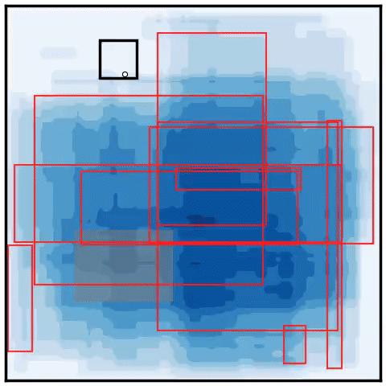
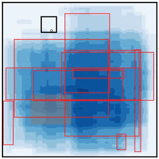
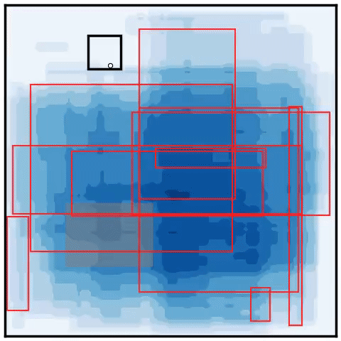

Random

Move the sensor between uniformly sampled waypoints without using model uncertainty.
Open in Colab ↗Embodied data collection playground
BoxGPT is a testbed for embodied data collection for generative models. It simplifies model regression to the extent that it becomes analytical. Meanwhile, it focuses on how sequential decision-making during data collection, in particular by embodied agents, affects the statistical properties of the collected data, and how these properties in turn affect model performance.
A mobile binary sensor can be controlled to move across the space to locate a hidden rectangular box. A generative prediction model is provided to generate samples of predicted rectangular boxes given the accumulated binary measurements. You can manually control the robot or design a feedback control policy to automate the data collection process.
View the Gymnasium environment on GitHub ↗Try it yourself
Move your mouse or finger to control the sensor. As it moves, the sensor collects binary measurements and the model updates its inferred boxes. Use Show Ground Truth to reveal the hidden box, or Enable Automation to let a feedback controller drive the sensor. Reset starts a new problem.
Run it yourself

Move the sensor between uniformly sampled waypoints without using model uncertainty.
Open in Colab ↗
Move to the point where the inferred boxes have the highest predictive uncertainty.
Open in Colab ↗
Distribute the sensor trajectory proportional to the predictive uncertainty distribution.
Open in Colab ↗Mathematical formulation
BoxGPT is a simplification of a general problem in embodied data collection. We are learning a generative model, denoted by \(p(y\mid x;\theta)\). Here, \(x\) is the state of the robot, \(y\) is the variable of interest and the variable of measurement, and \(\theta\) is the parameter of the model. For example, \(y\) could represent images in a vision model.
The robot moves across the space to collect data. Each data point is denoted by \(d_i=(x_i,y_i)\), where \(i\) is the index of the data point. The dataset is denoted by \(D=\{d_i\}_{i=1}^{N}\).
The learning process, or model regression, infers a distribution of the model parameters from the dataset. We denote this distribution by \(q(\theta\mid D)\). Maximum likelihood estimation can be considered a special case in which \(q(\theta\mid D)\) is a Dirac delta function.
Given an inferred distribution of model parameters, the posterior predictive distribution at a particular robot state \(x\) is
We quantify the predictive uncertainty at \(x\) using an information function \(h(x)\):
where \(\mathbb{E}\) denotes expectation and \(\mathbb{H}\) denotes entropy. The information function quantifies how uncertain the model is at a particular robot state. The expected information that a measurement at that state provides about the model parameters is given by the conditional mutual information
In BoxGPT, every box (rectangle) predicts the binary measurement deterministically. The second term is therefore zero, making predictive entropy and expected information gain equivalent for this problem.
The problem, however, is how to leverage the information function to generate robot actions in order to acquire new data. A robot that collects data faces unique limitations. The data is inherently collected sequentially, and the robot's motion is constrained by its dynamics. BoxGPT is designed to highlight and examine these challenges. It serves as a testbed for prototyping data-collection policies for embodied agents.
BoxGPT simplifies the general problem formulation to make model regression tractable. In fact, model regression is analytical, leaving the challenge entirely to the data-collection policy rather than the capability of the model. Modern AI paradigms tend to overemphasize the importance of model architecture and overlook the impact of data quality. More importantly, they often overlook the impact of the data-collection process itself on learning performance. BoxGPT is designed to expose the importance of decision-making in data collection, especially for embodied agents.
More specifically, in BoxGPT, the measurement \(y\in\{\text{Positive},\text{Negative}\}\) is binary. The predictive model is represented as a Bernoulli distribution:
The parameter \(\theta\) fully characterizes a box through its width, height, and center coordinates. The function \(g(x;\theta)\) indicates whether the robot state falls within the box characterized by \(\theta\):
Following this simplification, model regression becomes analytical. Given a dataset \(D=\{(x_i,y_i)\}_{i=1}^{N}\), define \(\Theta(D)\) as the set of parameters that characterize boxes containing all positive signals and none of the negative signals. The inferred distribution \(q(\theta\mid D)\) is uniform over this consistent set:
In practice, BoxGPT represents this distribution using candidate boxes sampled from the consistent set. These candidate boxes are shown in red in the interactive demonstration.
Following this simplification, the information function also has an intuitive explanation. The probability of a positive measurement at \(x\) is the fraction of inferred boxes that include \(x\):
The posterior predictive distribution is therefore Bernoulli with positive probability \(p_{+}(x)\). The information function is its binary entropy:
A state \(x\) has the highest uncertainty when exactly half of the inferred boxes include it while the other half do not.